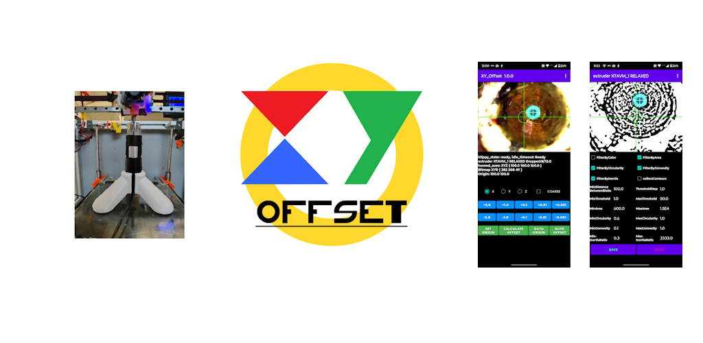
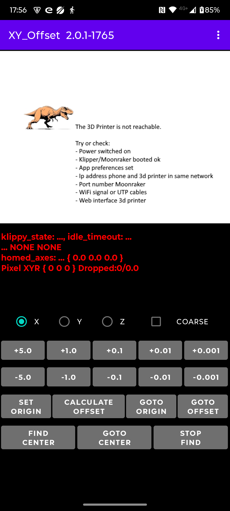
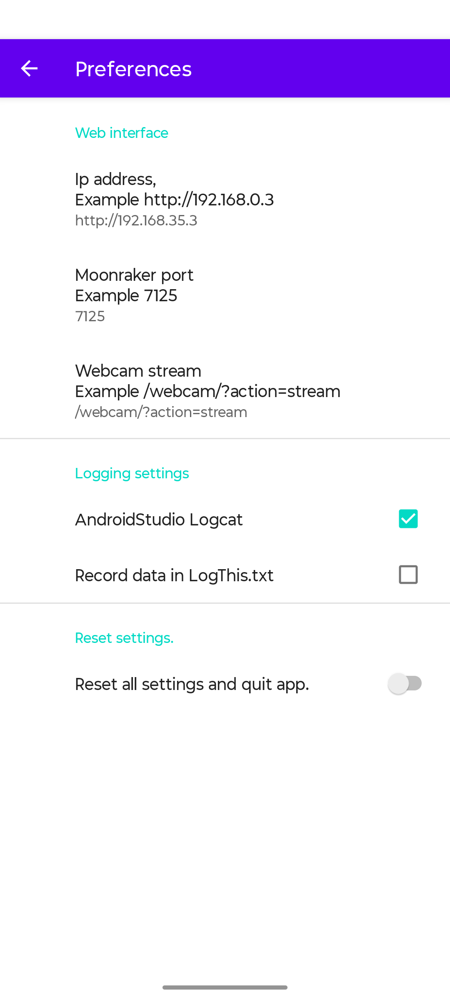
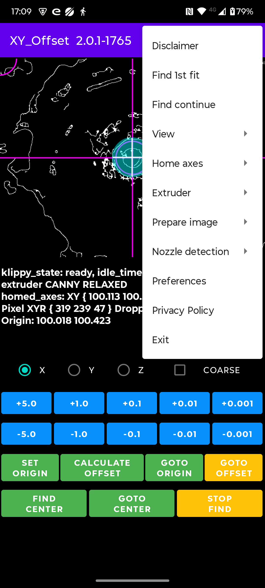
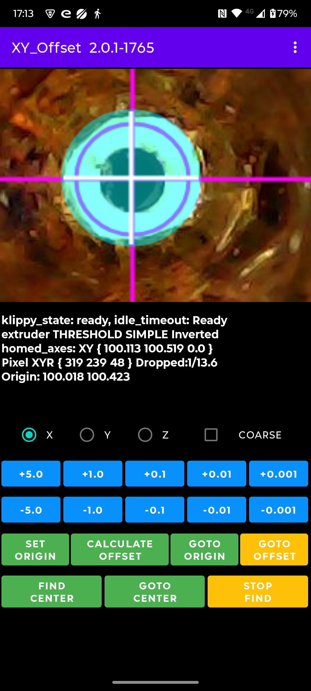
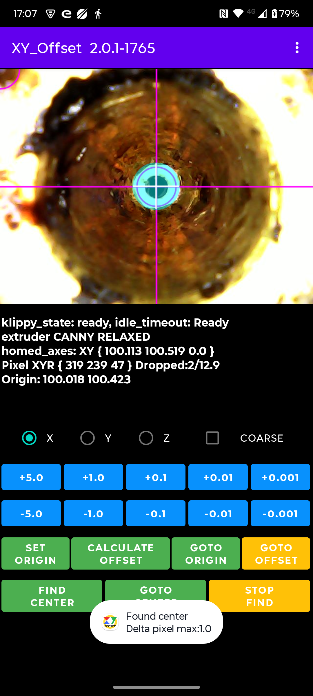
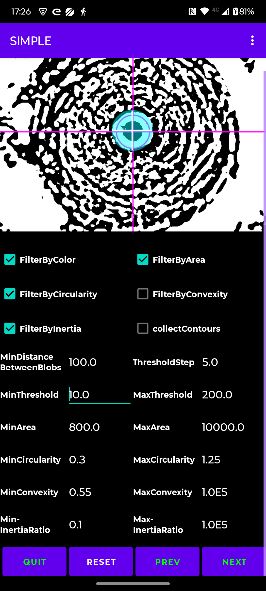
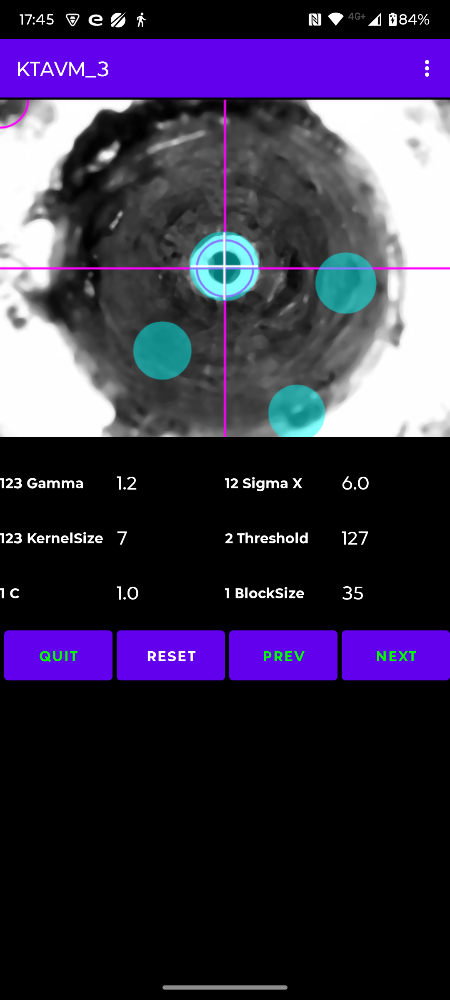
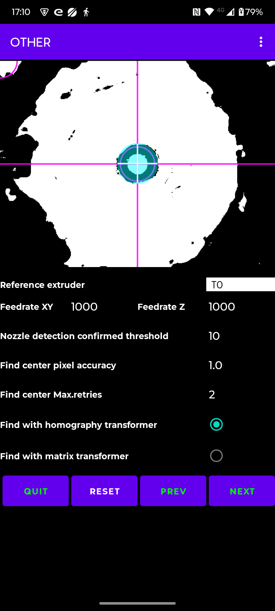

|
Update 2-Februari-2025. Read the Disclaimer.
Maybe you know 'Brian\'s index Nozzle calibration tool' or TAMV or kTAMV (k for klipper) ?
These tools use an USB (microscope) camera, often with build in leds for the exposure of the object.
The tools make it easyier to determine the XY offsets for the Z-probe or for a multi toolhead setup.
My 3D printer has 2 toolheads, a 3dTouch Z-Probe and runs Klipper.
kTAMV, for Klipper, failed sometimes to detect the nozzle on my printer or the offsets were just off.
Sometimes its caused by a not clean nozzle but a new, 'factory' clean, dark colored nozzle also failed.
Its not always clear why it went wrong. Its not possible to manually select a detection method or
to tweak the parameters of the used methods. The detection methods are global and not per extruder.

"How hard can it be to make an app in Android that allows all kinds of tweaks and rememebrs most per extruder ?"
The (microscope) camera, connected to a Pi, is setup in Klipper as WebCam and its available on the Klipper web-page.
The camera stream is also avaiable on the local network and can be displayed in a browser or picked up by an app.
Moonraker has an API which can be accessed via HTTP. Well, it seems like everything is there.
The app needs some settings, see Menu Preferences:
- the ip address of the processor board used for Klipper
- the port number of Moonraker
- the webstream of the camera
- optional: logging to Android Studio LogCat and/or to a text file on the phone
- reset all tweaked parameters to their default values
Note: The app is a heavy CPU load and memory consumer. The app will drop camera frames.
Within Klipper the webcam frame rate can be set, probably for internal usage in Klipper,
but via the network the app still gets the full frame rate (in my case ~14 fps) of the camera.
(k)TAMV uses OpenCv, so all is based OpenCv
Many parameters can be tweaked, most of them per extruder. This implies there is ample opportunity to screw image preparation and/or nozzle detection up.
But don't worry, everything can be reset again.
If you don't want nozzle detection then select "None" from its menu.
Per extruder the selection and preparation method can be selected manually or find them with the help of menu item "Find 1st fir" or "Find continue".
"Find" peforms a 'circular' find through preparation methods and per preparation method through the detection methods, until the 1st solution with only 1 blob detection is found.
When the found solution is confirmed during a number of frames the find stops.
With "Find continue" the blob detection is forced to continue with the next detection method or preparation method.




The app's menu has:
- Disclaimer Use the app at your own risk.
- Find 1st fit Find the first detection which has only 1 solution (blob) from the start.
- Find continue Continue the find with the next method.
- View Save frame to file, Flip frame horizontal or vertical, display processed frame, tweak colors and line size.
- Home axes Home X, Y, Z or XYZ axes.
- Extruder Select an extruder (T0-T7), tweak some detection parameters.
- Prepare image Select a preparation method for the nozzle detection, tweak the method parameters.
- Nozzle detection Select a nozzle detection method and tweak its parameters (save/reset).
The detection method BLOB SIMPLE is per extruder. All BLOB methods have the same parameters but different values.
- Preferences Set Ip address, Moonraker port, webcam stream, logging or reset all parameters.
- Privacy Policy The app does not collect and share any kind of data.
- Exit Exit the app.




Before you start:
- set all gcode offsets to zero in the Klipper configuration file
- clean all nozzles of any filament particles
- retract the filament, per toolhead, 2 mm so that the filament is not visible as a blob in/on the nozzle
- make sure the microscope camera has a solid pedestal and does not move due to vibrations when the toolhead/bed moves (via the USB cable !!).
I had to 3d print a pedestral, added soft rubber pads to its bottom and pin down the USB cable to the bed before it was stable.
- home all axes before you position the camera on the build plate.
You will have to 'lower' the buildplate before the camera will fit.
Manually adjust the focus of the camera.
Pin the USB cable to the build-plate to prevent very tiny movements !!!
- select a reference extruder from which the other extruder offsets will be calculated.
If applicable, start with the extruder which has the Z-probe attached too it.
- Note: 'dark' nozzles are much more difficult to detect
Manual Offset determination with offsets set to zero:
- Home the XYZ axes
- Position the microscope camera on the build plate, the nozzle of extruder TO is visible (sharp/focussed) in the microscope picture.
- Select from the menu "Find 1st fit"
- If you are not satisfied with the found fit continue with "Find continue" from the menu.
- Or select via the menu an image preparation method and nozzle detection method, and tweak them.
- Move the extruder (T0) to the center of the display (haircross)
Fine tune until the displayed "Bitmap XYR" values X and Y are stable.
This means the blob center is within 1 pixel accurate.
Note that the blob center can differ from the nozzle center.
- Press button "SET ORIGIN".
- Use menu "Select Extruder" to select another (T1..T7) extruder and wait for the extruder swap
- Press button "GOTO ORIGIN".
- Move the selected extruder (T1..T9) to the center of the display (crosshair)
- Press button "CALCULATE OFFSET" and the X and Y offset values are displayed.
Button "GOTO ORIGIN" moves the extruder to the coordinates set with button "SET ORIGIN".
Button "GOTO OFFSET" moves the extruder to the coordinates when button "CALCULATE OFFSET" was pressed.
"FIND CENTER" offset determination with offsets set to zero:
- Per default the reference extruder is T0 but its one of the 'other' tweak parameters.
- Home the XYZ axes
- Position the microscope camera on the build plate, the nozzle of extruder TO is visible (sharp/focussed) in the microscope picture.
- Select from the menu "Find 1st fit".
- If you are not satisfied with the found fit continue with "Find continue" from the menu.
- Or select via the menu an image preparation method and nozzle detection method, and tweak them.
- Move the extruder (T0) to the center of the display (haircross)
- Press button "SET ORIGIN".
- Press button "FIND CENTER". The nozzle detection is performed in 3 steps by measuring the nozzle pixel coordinates by moving the toolhead in a triangle, pentagon and heptagon pattern (including point of gravity). It stops on a direct hit in the crosshair center or when a completed measurement pattern is within the pixel accuracy. It may do some retries with the heptagon pattern.
Note: 'find center' will restart when the difference between the measured nozzle pixel coordinates is more the 2 pixels. Changing or tweaking the preparation method and nozzle detection method can help.
- Use menu "Select Extruder" to select another (T1..T7) extruder and wait for the extruder swap.
- Assuming the selected extruder returns to the position of the previous extruder.
- Press button "SET ORIGIN".
- Press button "FIND CENTER". The nozzle detection as described above is performed again. When the center is found the offsets wrt the reference nozzle are displayed.
The origin and found centers are 'remembered per extruder' during the session so its possible to use "GOTO ORIGIN" and "GOTO CENTER" after changing extruder.
They are not remembered for a 'next' session.
Currently, that is ALL !
Sources/tools:
- https://moonraker.readthedocs.io/en/latest/printer_objects/
- https://github.com/Life0fBrian/Brians-IDEX-Nozzle-Calibration-tool
- https://github.com/DanalEstes/TAMV
- https://github.com/HaythamB/TAMV
- https://github.com/TypQxQ/kTAMV
- https://github.com/niqdev/ipcam-view
- https://github.com/perthcpe23/android-mjpeg-view
- https://opencv.org/android/
- https://medium.com/@sdranju/android-studio-step-by-step-guide-for-setting-up-opencv-sdk-4-9-on-android-740547f3260b
- https://www.codeconvert.ai/python-to-java-converter
- https://syntha.ai/converters/python-to-java
- https://www.deepseek.com (canny image preparation, edge_detection, matix and homography transformation)
- Used camera: From WALLY SKY, microscope camera MGH1000, Resolution 640x480, zoom 50x-1000x
Go back to the Android App
|